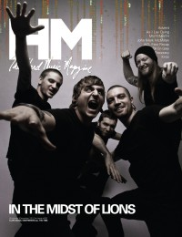

CMnexus
:
Contemporary Christian culture, music, and media.
Magazines
Profiles
Dove Awards
cmnexus.org
CM
nexus
→
Profiles
→
Writers: M
→
Levi McAllister
Levi McAllister
< -- Prev
ious
Next-- >
1
Writing credits listing
Nov 2008
in
HM
#134
Jonzetta
Trenches
Abandon
-
Abandon EP
My Epic
-
I Am Undone
Saints Never Surrender
-
Brutus
Before There Was Rosalyn
-
As Far As The Moon Is From The Sun
Call to Preserve
-
From Isolation
Lovedrug
-
The Sucker Punch Show
Philmont
-
Oh Snap
After The Sirens
-
What I Have To Give, Let It Be Enough
Copeland
-
You Are My Sunshine
Wrench in the Works
-
The Lost Art Of Heaping Coal
Jan 2009
in
HM
#135
Hardnews:
Ruth
"Austin City Limits Music"
Austin City Limits Music Festival
,
Robert Plant
,
T-Bone Burnett
,
Flyleaf
,
Mike Farris
"Unofficial Memoirs"
The Almost
The Apprentice
-
The Apprentice
Through Solace
-
The Stand
This or the Apocalypse
-
Monuments
Mar 2009
in
HM
#136
Philmont
-
Attention!
May 2009
in
HM
#137
The Chariot
Nov 2009
in
HM
#140
Venia
-
Frozen Hands
Jan 2010
in
HM
#141
Gwen Stacy
Divide The Sea
-
Man
Mar 2010
in
HM
#142
As Bold As Lions
-
Moving Forward
Secret and Whisper
-
Teenage Fantasy
Sep 2010
in
HM
#145
Hardnews:
In The Midst of Lions
Nov 2010
in
HM
#146
The Chariot
-
Long Live
Jan 2011
in
HM
#147
Underoath
-
Ø (Disambiguation)
I Am Alpha and Omega
-
The Roar and The Whisper
Jul 2011
in
HM
#149
Sleeping Giant
-
Kingdom Days In An Evil Age
Manchester Orchestra
Oct 2011
in
HM
#150
"Broken, Hurt, Pissed, Angry, Sad"
A Plea for Purging

Dec 2011
in
HM
#151
In The Midst of Lions
< -- Prev
ious
Next-- >
1
CMnexus
(noun)
The magazine index
of modern music
and Christianity
© 2011 CMnexus. Last updated August 2025.
Contact:
Rants and other correspondence to:
editor -AT- cmnexus
-DØT- org
About